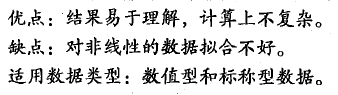

预测数值型数据：线性回归
用线性回归找到最佳拟合直线

相关系数
用处：比较这些拟合效果的好坏，计算预测值沖社序列和真实值乂序列的匹配程度
numpy库提供了相关系数的计算方法：可以通过命令correcoef(yEstimate,yActual)来计算预测值和真实值的相关性。

局部加权线性回归
线性回归的一个问题是有可能出现欠拟合现象，因为它求的是具有最小均方误差的无偏估
计。所以有些方法允许在估计中引人一些偏差，从而降低预测的均方误差。
其中的一个方法是局部加权线性回归（LWLR）。在该算法中，我们给待预测点附近的每个点赋予一定的权重；在这个子集上基于最小均方差来进行普通的回归。与kNN一样，在每次预测前要事先选取出对应的数据子集。

LWLR使用”核“（与支持向量机中的核类似）来对附近的点赋予更高的权重。核的类型可以自由选择，最常用的核就是高斯核，高斯核对应的权重如下：


缩减系数来“ 理解”数据
如果数据的特征比样本点还多应该怎么办？是否还可以使用线性回归和之前的方法来做预
测？答案是否定的，即不能再使用前面介绍的方法。这是因为在计算（xTx )-1 的时候会出错。
如果特征比样本点还多（n > m ) ,也就是说输入数据的矩阵乂不是满秩矩阵。非满秩矩阵在
求逆时会出现问题。
岭回归

lasso

前向逐步回归

权衡偏差与方差


示例：预测乐高玩具套装的价格
Logistic回归-从疝气病症预测病马死亡率


树回归

复杂数据的局部性建模

在树的构建过程中，需要解决多种类型数据的存储问题。
这里用字典来存储树的数据结构（包含四个元素）：
- 待切分的特征
- 待切分的特征值
- 右子树。当不再需要切分的时候，也可以是单个值
- 左子树。与右子树类似。